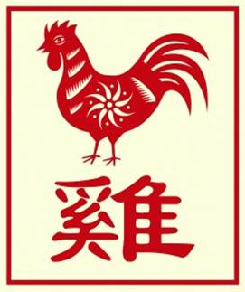

The Chinese Zodiac: Rooster

- Fixed Season: Autumn
- Fixed Direction: West
- Fixed Element: Metal/Yin
- Associated Sun Sign: Virgo
The Rooster is an animal guided by its instinct, welcoming the morning sun for no other reason that it just feels right. Similarly, those born under the sign of the Rooster will often find success when they allow themselves to be led by their instinct. This way compromise is swift, respect is steadily gained, and the overall pace of their life is one in which they continue to achieve rather than dwell or worry. But for those under the sign of the Rooster, however, this beneficial way of life is not something that comes to them without effort. Rather, it is the result of holding off a different type of urge, the urge to overthink.
When a Roosters allow themselves to overthink a situation, they can get caught on the details and sometimes lose sight of the larger picture. The result being that decisions do not come as easily as they might, and their life will not progress at the speed that it is really capable of going. With a little trust, and the ability to just commit, however, a Rooster can work to overcome these issue. Though while they tend to see better results when they go with their gut reaction, the worst case is merely slow and steady, rather than anything worrisome.